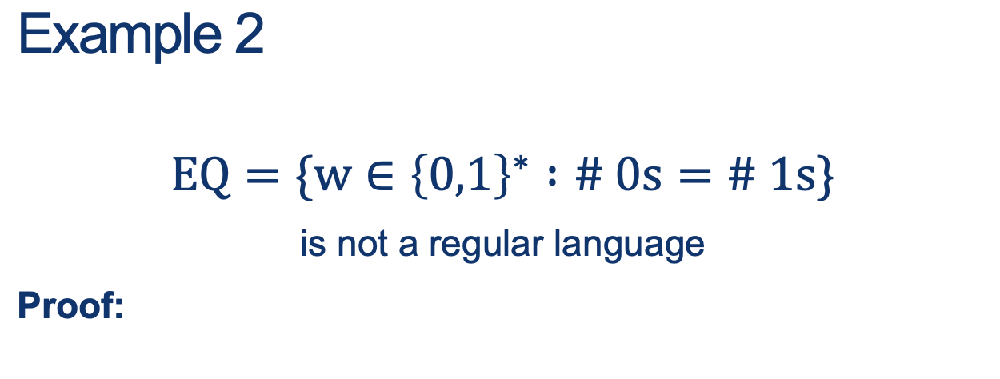

Lecture Notes 10:
PL Recap and Context-Free Grammars
Outline
This class we'll discuss:
- Recap: The Pumping Lemma
- Properties of Regular Languages
Recap: Non-RLs and the PL
Last lecture, we saw that:
- There are some languages that are beyond the power of a RE or FA to capture
- To distinguish them from Regular Languages, we want to be able to prove they are not regular
- To do so, we show that a Non-RL \(L_{\small{NON}}\) does not have a property that all RLs have (proof by contradiction!).
- We defined and proved that all regular languages have a property defined by the Pumping Lemma
- We did a couple examples of how to use the PL to prove a language is non-regular
Intuition for the Pumping Lemma
We could imagine the regular expression that generates this as:
\[
\Large{
00+11+01(00)^*11
}
\]
We could have an FA (int this case an NFA) that accepts this as:
Another possible "optimized" construction is:
To generate new words in the language, we could just take the path \(x : A^\prime \vdash B \vdash C \); take the looped pattern \(y : C \vdash D \vdash E\) over and over again; and then finish up by taking the path to \(z : E \vdash F \vdash G \), an accepted state.
Reminder of the PL rules
A good Regular Language \( L \) is such that after some word length \(N\), all the words can be written as: \(xyz\), where
- The looped part \(y\) exists ... in other words: \( \vert y \vert >0\)
- The first part of the word, \(\mid xy \mid \leq N\) (The section of the word up-to the loop repetition is the part that is \(\leq N\) )
- \( xy^iz \in L \) New words constructed as: \(xy^iz\), are also in \(L\) (reusing an internal loop pumps out more accepted words, including setting \(i=0\) and remove the looped pattern altogether)
Summary of how to do a PL proof
- Assume the language \(L\) is regular and therefore follows the PL
- You then have a length \(N > 0\) (that you don't need to specify!) after which the PL applies
-
You must choose a single word \(w \in L\) carefully so that:
- \(w\) has to do with that \(N\)
- and when writing \(w\) as \(xyz\) and following the PL rules, we arrive at a contradiction (usually by pumping the pattern: \(xyz \rightarrow xyyz\) once or a few times)

Let's retry those for clarity now.
 Proof sketch
Proof sketch
Pick a \(w = xyz\) with structure \(w = 0^i 1^i \) where the \(N\) plays a role such that, when we "repeat the loop pattern \(y\) inside \(w\), it destroys the pattern that defines \(HALF\).
Bad example: \(w = 0^{\frac{N}{2}}1^{\frac{N}{2}} \) ... this is bad because, even though \(\mid w \mid \geq N\) we can't really know where the the \(y\) part is.
Remember, the PL says the pattern \(\mid xy \mid \leq N\) but not which part is \(x\) and which is \(y\).
Therefore, the repeated pattern \(y\) could very well be "something" that when repeated, would maintain the structure that makes \(HALF\).
Activity 1 [2 minutes]:
Now, think of an example that forces the issue and attempt the proof!
(Wait; then Click)
Steps:
- Suppose this were regular.
- Let \(N\) be the constant selected by the pumping lemma.
- Consider the string \(w = 0^N 1^N \). Then \( \mid w \mid = 2 \cdot N>N \), and so we can write \(w = xyz\).
- Since \(\mid xy \mid \leq N \) (must be) and \( \mid y \mid > 0 \), it must be that \(y\) is a non-empty substring of the \(0^N\) part, i.e. \(y = 0^k \) for some k>0.
- According to the pumping lemma, \( xyyz = 0^{N+k} 1^N \) must also belong to \(HALF\) for k>0
- CONTRADICTION!

Proof sketch
Since \(HALF\) is a subset of \(EQ\) and we proved \(HALF\) is not regular, then we could pick \(w \in HALF \subset EQ\) and just indicate that that is enough.
The technical part is: simply choose a way to get to \(HALF\) from \(EQ\) without having to prove that one is a subset of the other (which would be required).
Activity 2 [2 minutes]:
Use the previous example and closure properties!
(Wait; then Click)
Steps:
- This proof by contradiction will use the previous example and closure properties.
- Let’s assume EQ is regular.
- We also know that \(0^*1^*\) is regular.
- Because regular languages are closed under intersection, this language would also have to be regular:
\( EQ \cap a^*b^* = \{ w \in \{a,b\}^* : w = a^ib^i, \text{for some }i \geq 0 \} = HALF \)
- We just proved the non-regularity of HALF, which is a contradiction.
- Therefore EQ cannot be regular.
[2 minutes]:

Hint: A palindrome is VERY close to the concept of having "the same number of elements in one part as in another" (like for the example with Language \(HALF\))
Some Perspective
Why are we asking you all of these questions about regularity of languages, etc.?
REs and FAs are really simple computational machines.
What does this have to do with getting your Java code to compile, or using dynamic programming, or ...
Turns out that there are some surprisingly algorithmic things we can do when we start asking questions about these simple machines.
Let’s take a look at some questions we might ask.

Why are these questions important?
(Wait; then Click)
It's not about simply building a machine that might do something,
It's about knowing, before expending unnecessary effort if:
- we are reinventing the wheel.
- we are building something that never terminates
- we are building something that works but is extremely inefficient
- etc
In Real Life
- Do we have a way of answering these questions about our own programs?
- In a way, all programs do symbol processing
- In a way all of them are like little Machines
- If we can represent processes as FAs or REs, we can answer the questions shown above
Activity 4 [5 minutes]:
How would you check, for an RE or an FA, to see if your input satisfies one of the following properties?
-
Acceptance:
(Wait; then Click)
If we go through the transition table (using a lookup table), do we get to an accepting state?
-
NonExistance
(Wait; then Click)
If count the number of states \(N_Q\) in the "Machine", we need only check all words with length \(\mid w \mid \leq N_Q\)
-
Totality
(Wait; then Click)
Check there is no path from \(q_0\) to any non-accepting state.
-
Nonempty Intersection
(How would you do this?)
-
Subset
(How would you do this?)
-
Equivalence
(How would you do this?)
-
Optimality
(How would you do this?)
Next class: Intro to CFGs
Homework
[Due for everyone]
Problem Set 03 (in Moodle) is due next Friday 02/25 at 5PM
[Optional]
TODO